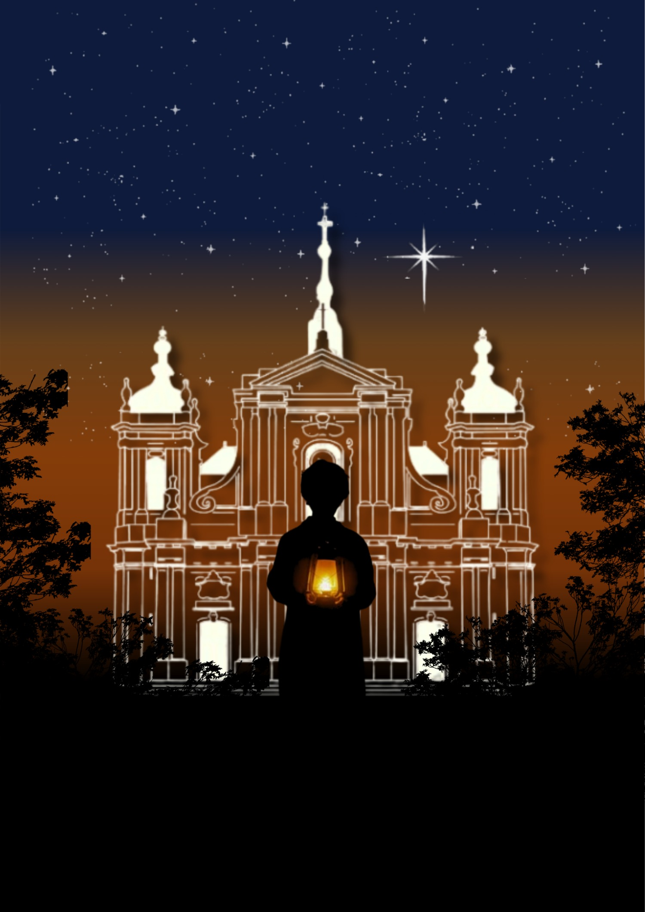
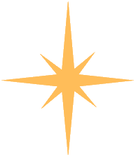
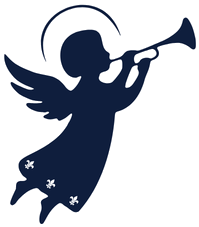
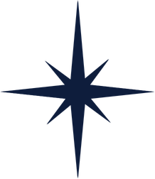
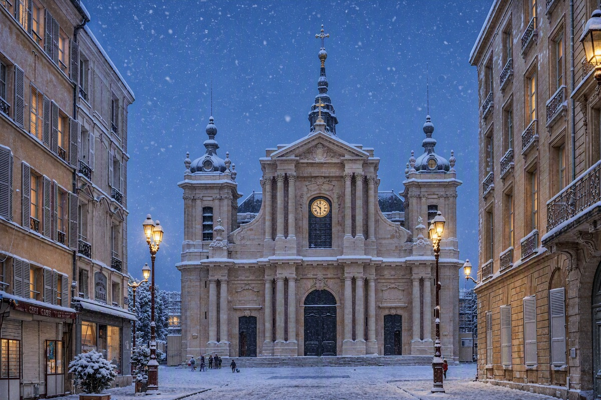
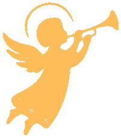

Spectacle & Crèche vivante — la Nativité en plein air
✦ Le projet
Au cœur de l'hiver, Michaëlo fait revivre le récit le plus ancien de Noël : celui de la Nativité. Un spectacle en plein air, gratuit et accessible à tous, où se déploient mise en scène, musique, lumière et crèche vivante — pour donner à voir, une fois encore, la naissance de l'Enfant-Roi.
Portée par de jeunes Versaillais bénévoles, l'association Michaëlo est indépendante et sans attache confessionnelle institutionnelle. Elle souhaite offrir à la ville une soirée de Noël unique : celle où l'on se retrouve, ensemble, autour de la crèche, pour se rappeler ce que la nuit de Bethléem a d'universel — la venue d'une lumière au milieu de l'obscurité.
Car la crèche vivante n'est pas qu'un tableau : c'est toute une communauté qui se rassemble pour raconter, à hauteur d'hommes, la naissance du Christ. Bergers, rois mages, Marie et Joseph, l'étable et l'étoile — chacun y trouve sa place, croyant ou simple curieux, petit ou grand, dans la même veillée de Noël.

Réunir petits et grands autour de la crèche, dans un même élan de fraternité et de joie partagée.
Faire du parvis de la cathédrale Saint-Louis l'écrin d'une crèche vivante, entre pierre et ciel.

Donner à voir la naissance du Christ, dans un spectacle vivant, gratuit et ouvert à tous.
Offrir à Versailles une veillée de Noël chaleureuse, conviviale et lumineuse.

✦ Programme
Un parcours simple et lumineux, de l'ouverture du parvis à la crèche vivante, pour vivre ensemble la nuit de la Nativité.
Accueil du public et premières animations musicales sur le parvis de la cathédrale.
Le spectacle et la crèche vivante rejouent la naissance du Christ sur le parvis de la Cathédrale Saint-Louis. Durée : 1 heure.
Temps fortConcerts en plein air, stands de créateurs versaillais et buvette & restauration traditionnelle faite maison.
Fermeture progressive du site. Merci à tous d'avoir fait vivre cette première édition.
✦ Le lieu
Construit entre 1743 et 1754, au cœur du quartier Saint-Louis, le parvis de la cathédrale Saint-Louis est l'un des espaces publics les plus chargés d'histoire et d'émotion de Versailles.
Un écrin architectural exceptionnel — solennel et chaleureux à la fois — qui offrira à la crèche vivante une profondeur et une beauté incomparables, entre pierre séculaire et ciel de Noël.
Gares de Versailles — distance à pied
✦ Rejoindre l'aventure
Michaëlo est avant tout une aventure humaine. L'organisation recherche des bénévoles, des créateurs et des partenaires pour préparer la première édition.

Accueil, logistique, costumes, sécurité, figuration dans la crèche vivante — chaque main compte pour faire vivre la soirée.
Remplir le formulaire →Stands, savoir-faire et artisanat exclusivement versaillais pour animer l'intermède de la soirée.
Nous écrire →Soutien matériel, financier ou communication pour garantir la qualité et la gratuité de l'événement. Don non défiscalisable — Michaëlo ne peut pas délivrer de reçu fiscal.
Faire un don sur HelloAsso →Une autre question ? Écrivez-nous directement à michaelo.association@gmail.com